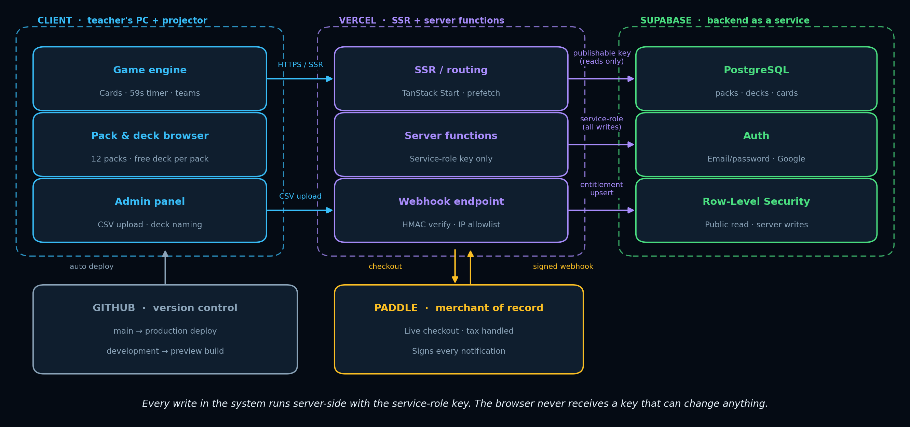
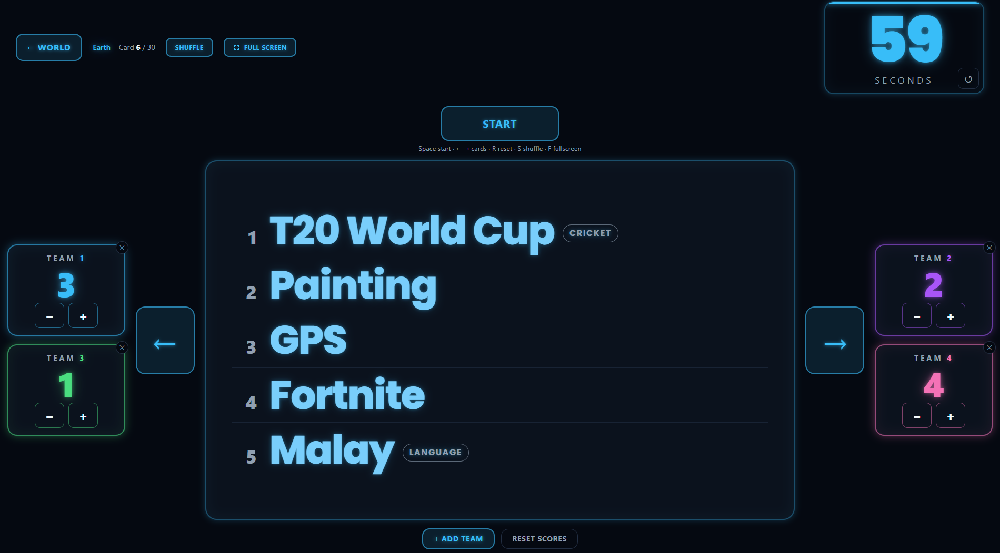
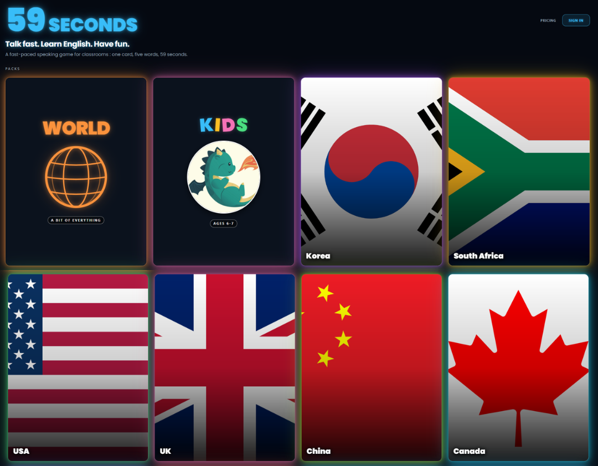

I built a speaking game that gets ESL students to actually talk.
59 Seconds is a projector-first classroom game: one card, five words, one student describing while the class guesses against the clock. Designed, built, secured, deployed and sold by one developer - me - and played by real students every week.
Live product · Real payments · 2,880 cards across 12 region packs
- 159seconds.liveLive product
- 22,880 cards · 12 packsRegion-localized
- 3Lighthouse 96 / 100 / 93 / 100Measured
- 439 unit tests + system suiteTested
- 5Real payments, verified refundsIn production
About
A teacher who learned to ship software
I teach English at a university in Seoul, and I build the tools I wish my classroom had. 59 Seconds started as a problem I hit every single week: students who could speak English but wouldn't, and edtech that made it worse by putting each of them behind a separate screen.
So I built the opposite. One shared screen, students facing each other, and vocabulary drawn from their own region. Then I kept going past the prototype - through security design, payments, automated testing and a live deployment - because a tool that only works in a demo does not help anyone on a Tuesday morning.
The result is a real commercial product with paying customers, not a portfolio exercise. Everything on this page is something I designed, wrote, tested or shipped myself.
Case study
From a classroom problem to a paid product
The full story of how one recurring teaching frustration became a deployed, revenue-generating web application.
The problem. As a university English teacher in Seoul I kept meeting students who could speak English but wouldn't - speaking anxiety is the biggest blocker in ESL classrooms, and most edtech makes it worse by isolating every learner behind their own screen with culturally generic content.
The idea. Flip the model: one shared screen, students facing each other, and vocabulary drawn from the students' own region - Korean slang, local places, food they actually eat. A digital rebuild of the party game 30 Seconds, engineered for a projector and readable from the back row.
My role. Everything: research, UX, frontend, backend, database and security design, payments, deployment, content curation, testing, and classroom trials with my own students and colleagues' classes at the British Council.
How it's built. A serverless web app: React 19 + TanStack Start on Vercel, Supabase (PostgreSQL, auth, Row-Level Security), and Paddle as merchant of record. Every database write runs server-side with the service-role key; purchases become entitlements only through an HMAC-verified, IP-allowlisted webhook. Content ships through a CSV pipeline, so adding an entire pack is a data task, not a code change.

See it in action
Built to be read from the back row
Every design decision here came out of a real lesson: type large enough for a projector, scores reachable without leaving the game, and nothing on screen that a teacher has to explain.


Results
Measured, not claimed
Every number below comes from a tool or a transaction, not an estimate.
What testing found. System testing against production caught a real regression - the end-of-round bell silently never fired - that 24 passing unit tests couldn't see. Root-caused, fixed, and locked in with a regression test that provably fails on the old code.
What classrooms taught me. Six shipped changes came straight from real lessons: bigger type for the back row, a Kids pack for ages 6-7, editable team names, a smarter shuffle, full-height controls, and the bell itself. A perfect automated accessibility score still wasn't readable to nine-year-olds - only users tell you that.
Documentation
The full paper trail
The product, the written report, the demo and the architecture - everything needed to check the work behind the claims above.
{kind=link}
The source repository is private because 59 Seconds is a live commercial product with paid content; instructor-level access is provided for academic review, and selected code excerpts appear in the report and demo video.